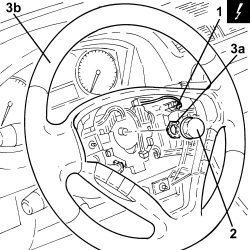

4110A10 STEERING WHEEL - R+R FOR REPLACEMENT OR CHECKS
- Path
- Procedures > 41 STEERING UNIT > 4110 STEERING CONTROL AND LINKAGE > 4110A STEERING CONTROL > 4110A10 STEERING WHEEL - R+R FOR REPLACEMENT OR CHECKS
- Kind
- repair procedure (removal / refitting; the operation number is the code)
- Applies to
- all engines; all production periods
- Interactive page
- https://sloeber94.github.io/elrnDB-fCrm/en/#/194000523
Applies to: all engines; all production periods
 Removing
Removing
 Refitting
RefittingOp. 5580C18 AIR BAG MODULE - R+R
- Position the front wheels so that they are perfectly straight and mark the position of the steering wheel in relation to the upper half casing.
1. Disconnect the electrical connection.
Description | Connector | |
|---|---|---|
1 | Steering wheel node control unit (NVO) |
2. Remove the protective cap.
3. Undo the nut (3a) and remove the steering wheel (3b).

Applies to: all engines; all production periods
Refitting
Removing- Place the steering wheel in position checking that the marks made previously on the steering wheel and the upper half casing are aligned.
- Tighten a new steering wheel securing nut to the recommended torque.
Component | Fastening | dia | Value (daNm) | Validity |
|---|---|---|---|---|
Steering wheel | Nut (to replace) | M16 | (steering shaft side) 4.5 - 5.5 |
- Place the protective cap in position.
- Connect the electrical connection.
Topics linked from this page (2)
Topics that link to this page (18)
- H011 STEERING HARD / (IN ONE DIRECTION ONLY)
- N020 HORNS NOT WORKING
- 3330B02 PEDAL ASSEMBLY - R.R
- 3330B22 BRAKE PEDAL - R+R FOR MANUAL GEARBOX VERSIONS
- 3330B26 CLUTCH PEDAL - R+R
- 3330B38 PEDAL UNIT MOUNT - R.R.
- 4110A30 SUPPORT WITH STEERING CONTROL SHAFTS - R+R
- 5040C10 AIR CONDITIONING CASING - R.R
- 5040C50 AIR CONDITIONING HEATER RADIATOR - R.R.
- 5040C64 A/C EVAPORATOR - R+R
- 5040D80 AIR CONDITIONER SYSTEM WIRING BUNDLE - R R OR REPLACE
- 5040D94 AIR CONDITIONING LEFT UPPER AIR DISTRIBUTION FLAP MOTOR (DEFROST) - R.R
- 5505C10 FRONT CROSSMEMBER WIRING - R.R
- 5505C31 BUILT-IN WIRING UNDER DASHBOARD - R.R.
- 5550A10 STALK UNIT ASSEMBLY - R+R
- 7040A10 DASHBOARD TRIM - R+R
- 7040A97 INSTRUMENT PANEL TRIM SUPPORTING CROSSMEMBER - R.R
- 7095E22 SOUND-PROOF PANEL UNDER DASHBOARD SUPPORTING CROSSMEMBER - R.R.